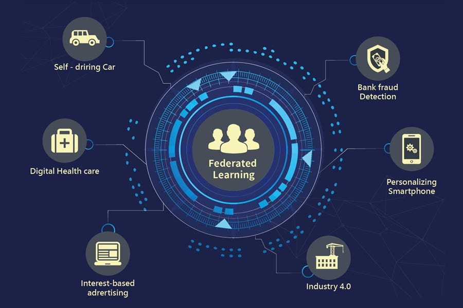

Federated Learning: A Decentralized Approach to Data Privacy

Introduction
In today’s digital world, data privacy has become a critical concern as companies gather vast amounts of personal information to train machine learning models. However, traditional machine learning methods typically require centralizing data in a single location, raising concerns about security and privacy. Enter Federated Learning (FL)—a revolutionary approach that allows machine learning models to be trained across multiple devices or servers without sharing raw data. In this blog, we’ll explore how federated learning works, its benefits, challenges, and real-world applications.
What is Federated Learning (FL)?
Federated learning is a decentralized machine learning technique that allows models to be trained on data stored locally on devices (such as smartphones or edge devices) without transferring the raw data to a central server. Instead of sending sensitive data to a centralized repository, the model itself is sent to the devices where data resides. Each device trains the model locally using its own data, and only the model updates (not the data) are shared back to a central server. The central server aggregates these updates and refines the global model.
This approach enables machine learning models to improve without compromising user privacy, as sensitive information never leaves the device.
How Does Federated Learning Work?
The process of federated learning involves several steps, which can be broken down as follows:
- Initialization: A central server initializes the machine learning model, which is then sent to multiple devices or clients.
- Local Model Training: Each device trains the model using its local data, such as a smartphone training a model for predictive text.
- Model Update Aggregation: After training, each device sends its model updates to the central server, which aggregates them to form a global model.
- Global Model Refinement: The central server refines the global model using the aggregated updates and sends it back to the devices for further training.
- Continuous Improvement: The model iteratively improves over time as it learns from the data across different devices.
Benefits of Federated Learning
Federated Learning offers a variety of advantages over traditional machine learning methods, particularly in the context of data privacy and security:
- Enhanced Privacy: Sensitive data remains on the device, ensuring privacy.
- Data Security: Only model updates (not raw data) are shared, reducing security risks.
- Reduced Data Transfer Costs: Model updates are smaller in size than raw data, minimizing transfer costs.
- Scalability: Federated learning can scale across millions of devices, leveraging distributed resources.
- Real-Time Updates: Models are updated in real-time based on new data from devices.
Challenges of Federated Learning
While federated learning offers significant advantages, it also presents several challenges that need to be addressed:
- Communication Efficiency: Efficient communication protocols are needed to handle multiple devices and ensure timely updates.
- Non-IID Data: Data on different devices may be heterogeneous, making generalization difficult.
- Device Heterogeneity: Devices may vary in processing power and storage, affecting model training efficiency.
- Data Privacy and Security Risks: Adversarial attacks on aggregated updates can pose privacy risks.
- Model Convergence and Stability: Training on non-IID data can slow down convergence and affect model stability.
Applications of Federated Learning
Federated learning is being applied in various domains, particularly where data privacy is of utmost importance:
- Healthcare: Enables collaboration across medical institutions while keeping patient data private.
- Finance: Helps develop fraud detection and credit scoring systems while maintaining user privacy.
- Mobile and IoT Applications: Improves predictive text, personal assistants, and recommendation systems on mobile devices.
- Autonomous Vehicles: Allows cars to learn from a fleet of vehicles while keeping data on individual cars private.
- Smart Cities and IoT Devices: Improves services in smart cities by aggregating data from various devices while maintaining privacy.
Conclusion
Federated Learning offers a promising solution to the growing concerns around data privacy and security in the age of AI. By enabling decentralized model training, it allows organizations to leverage data from various sources without compromising user privacy. While there are challenges, such as communication efficiency and data heterogeneity, the benefits of federated learning make it a game-changer for industries like healthcare, finance, and mobile applications.